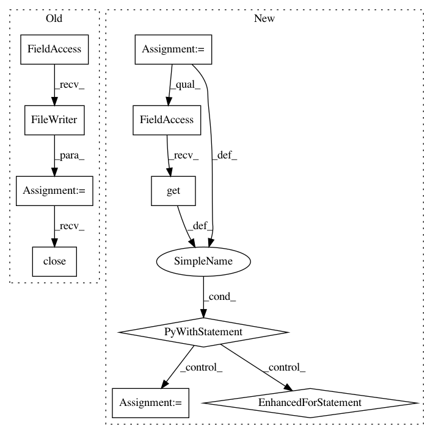

51e9611843caea57bebdc1d8cf2a2c9c1ecf090b,tensorboard/plugins/image/images_plugin_test.py,ImagesPluginTest,setUp,#ImagesPluginTest#,43
Before Change
description="how do you pronounce that, anyway?")
merged_summary_op = tf.summary.merge_all()
bar_directory = os.path.join(self.log_dir, "bar")
writer = tf.summary.FileWriter(bar_directory)
writer.add_graph(sess.graph)
for step in xrange(2):
writer.add_summary(sess.run(merged_summary_op, feed_dict={
placeholder: (numpy.random.rand(1, 8, 6, 3) * 255).astype(
numpy.uint8)
}), global_step=step)
writer.close()
// Start a server with the plugin.
multiplexer = event_multiplexer.EventMultiplexer({
"foo": foo_directory,
After Change
tf.summary.image(name="baz", tensor=placeholder)
merged_summary_op = tf.summary.merge_all()
foo_directory = os.path.join(self.log_dir, "foo")
with test_util.FileWriterCache.get(foo_directory) as writer:
writer.add_graph(sess.graph)
for step in xrange(2):
writer.add_summary(sess.run(merged_summary_op, feed_dict={
placeholder: (numpy.random.rand(1, 16, 42, 3) * 255).astype(
numpy.uint8)
}), global_step=step)
// Create new-style image summaries for run bar.
tf.reset_default_graph()
sess = tf.Session()
placeholder = tf.placeholder(tf.uint8)
summary.op(name="quux", images=placeholder,
In pattern: SUPERPATTERN
Frequency: 3
Non-data size: 10
Instances
Project Name: tensorflow/tensorboard
Commit Name: 51e9611843caea57bebdc1d8cf2a2c9c1ecf090b
Time: 2018-12-10
Author: stephanwlee@gmail.com
File Name: tensorboard/plugins/image/images_plugin_test.py
Class Name: ImagesPluginTest
Method Name: setUp
Project Name: tensorflow/tensorboard
Commit Name: 51e9611843caea57bebdc1d8cf2a2c9c1ecf090b
Time: 2018-12-10
Author: stephanwlee@gmail.com
File Name: tensorboard/backend/event_processing/event_file_inspector_test.py
Class Name: EventFileInspectorTest
Method Name: _WriteScalarSummaries
Project Name: tensorflow/tensorboard
Commit Name: 51e9611843caea57bebdc1d8cf2a2c9c1ecf090b
Time: 2018-12-10
Author: stephanwlee@gmail.com
File Name: tensorboard/plugins/audio/audio_plugin_test.py
Class Name: AudioPluginTest
Method Name: setUp